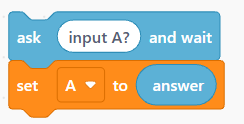
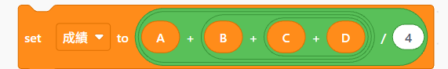
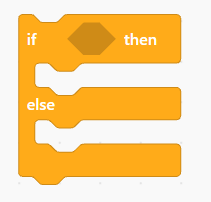
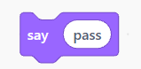

輸入／輸出
Input / Output
Input / Output
平行四邊形
資料進來或結果顯示時使用。輸入 4 個數字時，請寫 Input a、Input b、Input c、Input d。
UNIT 01 · FLOWCHART & SCRATCH
目標：建立一個完整的虛擬流程圖，將 4 個成績輸入為 a、b、c、d，算出平均成績，並用 if / else 判斷是否及格。
STEP 1 · FLOWCHART SYMBOLS
資料進來或結果顯示時使用。輸入 4 個數字時，請寫 Input a、Input b、Input c、Input d。
進行計算時使用：成績 = (a + b + c + d) ÷ 4。
只放 True / False 的問題：成績 ≥ 60?。兩條箭頭分別前往 Pass 與 Not pass。
STEP 2 · BUILD IT
每一次選擇正確的圖形，下方的流程圖就會多完成一步。要從 Start 開始，也要走到 End。
STEP 3 · FLOWCHART → SCRATCH

ask [input a?] and waitset [a] to (answer)
重複同樣的結構，依序輸入並儲存 b、c、d。每次詢問後要馬上 set，否則下一個 answer 會覆蓋前一個值。

建立 成績 變數，將 a、b、c、d 的總和除以 4。
注意：要先把 a、b、c、d 全部相加，再除以 4，也就是 (a + b + c + d) ÷ 4。

把 成績 ≥ 60 放進六角形條件格。
if / True：say [Pass!]；else / False：say [Not pass.]
菱形是「問題」，不能直接寫 Pass；Pass 與 Not pass 是從 True / False 箭頭走出的輸出結果。

True 分支：say [pass]
False 分支：將文字改為 say [not pass]。
最後一定要有輸出：流程圖用平行四邊形；Scratch 用 say 方塊讓使用者看到判斷結果。
STEP 4 · FINISH YOUR WORK
將你的流程圖與 Scratch 程式完成後，截圖 Scratch 積木程式碼，繳交到學習吧。
前往學習吧繳交作業 ↗提醒：請先登入親師生平台 → 學習吧。